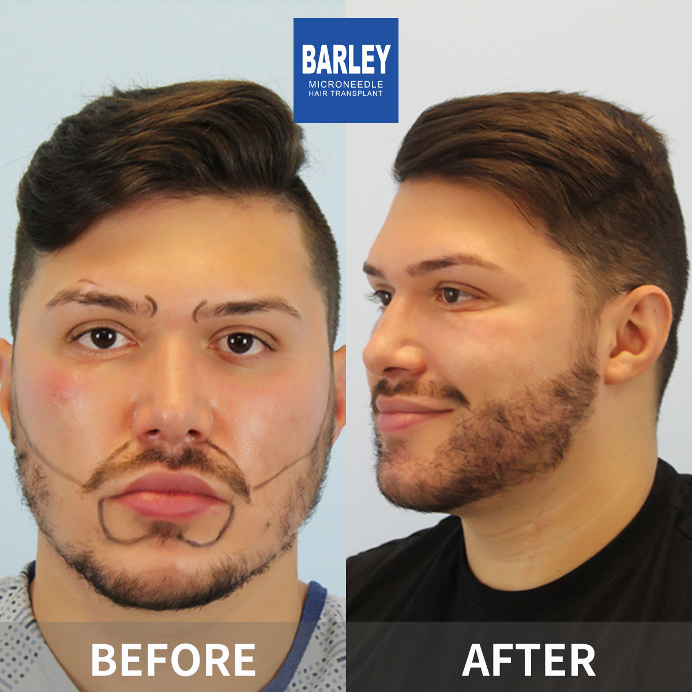
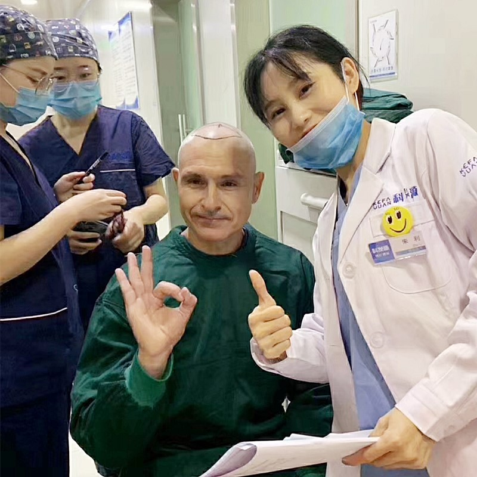
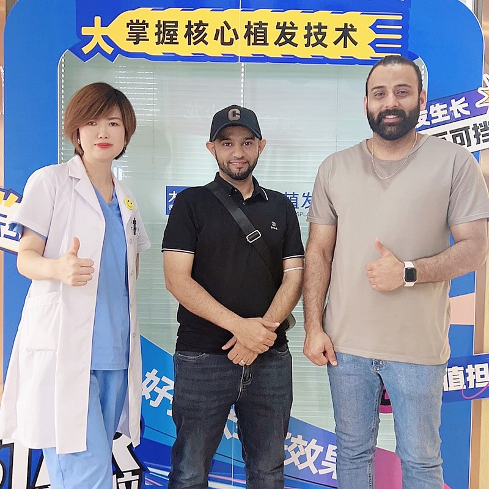

用於預防男性DHT相關脫髮的口服藥物

非那雄胺是FDA核准的口服藥物，透過抑制DHT（導致雄性禿的荷爾蒙）作用。它是目前最有效的脫髮治療之一。在大麦，我們提供非那雄胺的醫療指導，確保您了解其作用機制、預期效果，以及它是否適合作為您毛髮修復旅程的一部分。
了解這種強效的DHT抑制治療
持續使用的預期效果
讓毛髮更健康的簡單步驟
適合您嗎？專業評估
完整了解作用機制
簡單的每日一次療程
3-6個月看到可見效果
隨時間追蹤進度
持續使用以維持效益
業界領導者，效果有證明
自2006年以來一直是微針植髮技術的先驅和領導者
遍佈中國主要城市，均具有相同的高標準
創新的微針和種植筆技術，獲得優異效果
受到全球患者信賴，帶來改變人生的效果
為國際患者提供全程英文支持
先進設施和嚴格的安全協議，讓您安心
看看我們患者實現的驚人轉變




與我們滿意患者的珍貴時刻

成功手術後與我們醫療團隊合影

與我們的醫生一起慶祝絕佳效果

另一位滿意的患者分享喜悅

患者出院前與我們專家合影

開心的患者與陳醫生治療後合影
興奮的患者展示他們的新造型
聽聽全球各地滿意患者的分享
"我脫髮很快！大麦的非那雄胺完全阻止了我的脫髮！甚至開始長新毛髮！醫生全程監控我！"
"我很害怕服用非那雄胺！大麦的醫生解釋了一切，解決了我所有的顧慮，並監控我！效果完美，沒有問題！"
"我為我的脫髮嘗試了一切！非那雄胺終於有效！大麦的醫療計畫給了我驚人的效果！我的毛髮更濃密更健康！"
"我在Google和Bing上研究非那雄胺好幾個月！大麦的醫生幫助我了解效益和風險！治療效果完美！"
"我的毛髮成塊掉落！非那雄胺完全阻止了！我很擔心副作用，但有大麦的監控一切都很好！"
"我對阻止脫髮失去希望！非那雄胺有效！大麦的醫療計畫給了我個人化治療！我的效果驚人！"
體驗我們現代舒適的設施

我們的先進設施

在我們的高級休息室放鬆

無菌且先進

私密且專業

舒適的術後空間

溫馨的入口
找到關於植髮手術常見問題的答案
聯絡我們預約免費諮詢
15810155700
+86 13730143529
hairtransplant@qq.com